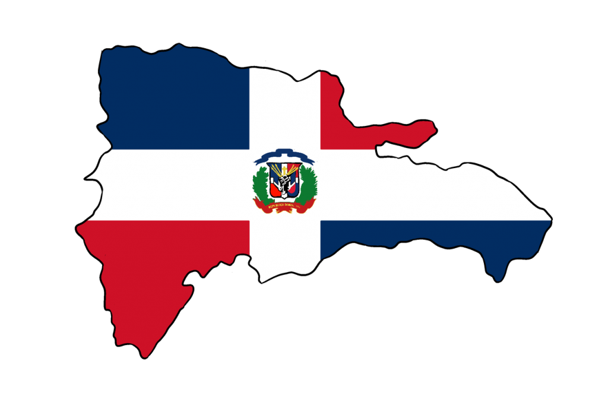

These are the labs
Fancy up that poemMy name is Darianna Hidalgo and I am from the Dominican rebublic. I had a fun childhood fill with playing outside with cousins. I made friends with the girl from the neigberhood. We always made sure to have fun.I speak both English and spanish due to me moving away from home. .
Mt intrest is photography I really like camaras and the way they work. I like to take pictures with nice scenery such as sunset and sunrise. I have a canon powershot G7x mark II.